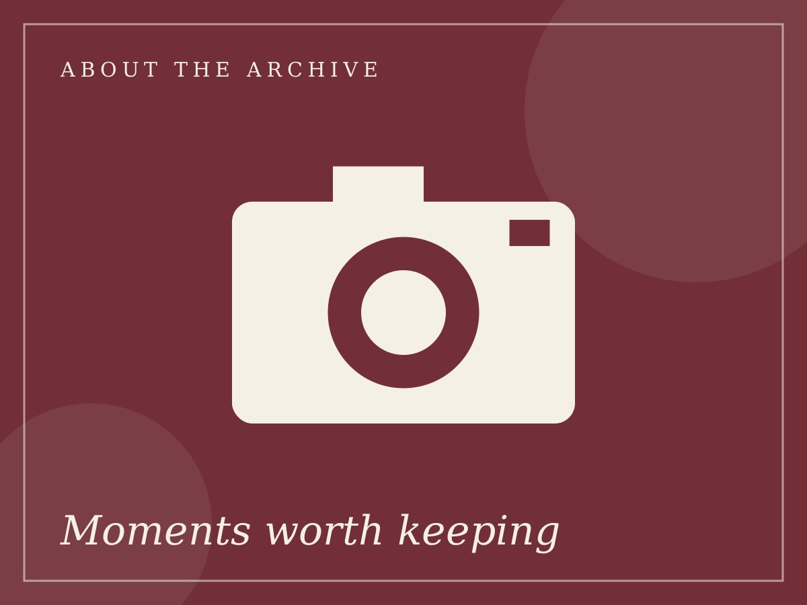

Editor's Note
About RE/WIND

What is RE/WIND?
RE/WIND is a digital nostalgia archive designed like a vintage magazine. It travels through the 1970s, 80s, 90s and 2000s and looks at music, cinema and television, fashion, technology and everyday life in India.
Why nostalgia?
Looking back helps us understand how we got here. A cassette, a Sunday serial or a Nokia phone reminds us that every generation grew up with its own tools and its own favourite stories.
Why only India?
The project keeps its focus on Indian culture so that every page can go deeper into the songs, films, shows and gadgets that were part of Indian homes, from single-screen cinemas and Doordarshan to cybercafés and the first mobile phones.
The inspiration
The project is inspired by old magazines, family photo albums and the stories told by parents and grandparents. It was built as a first-year BTech CSE mini-project using only HTML, CSS and Bootstrap.